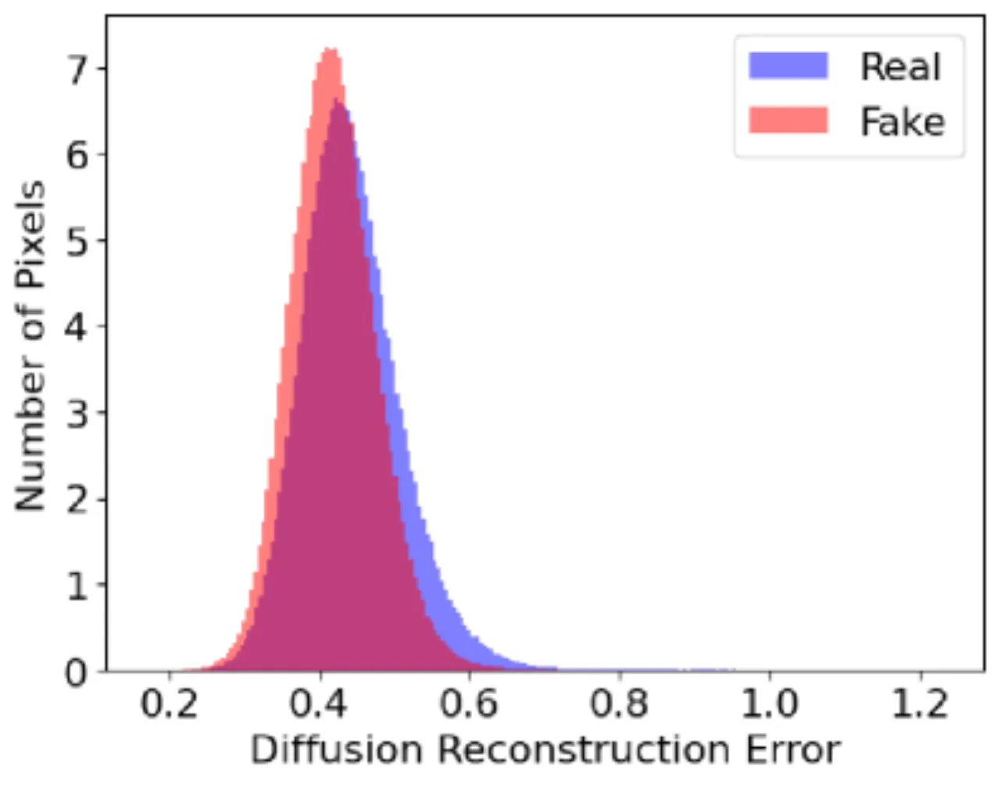
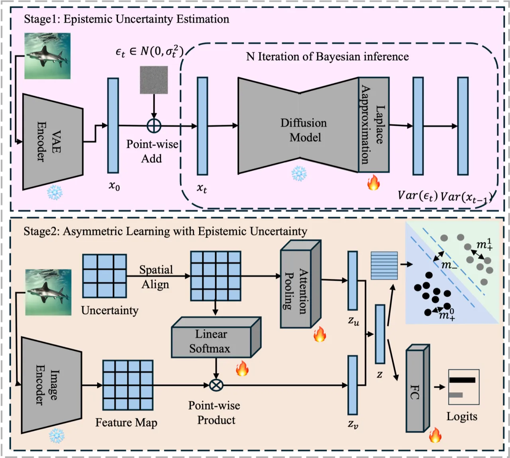
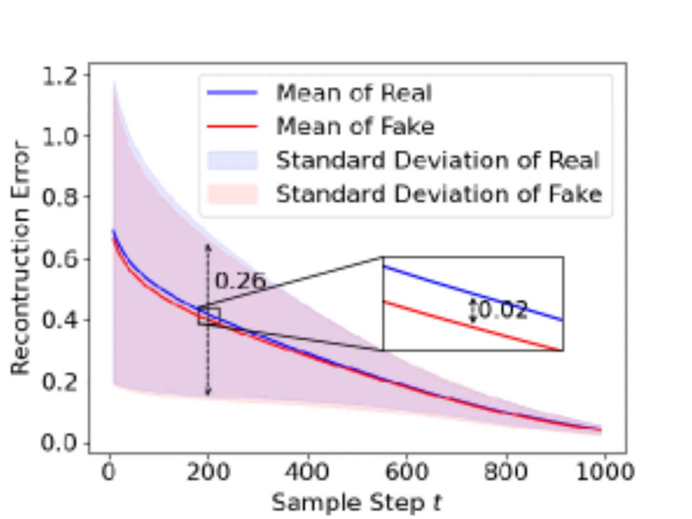
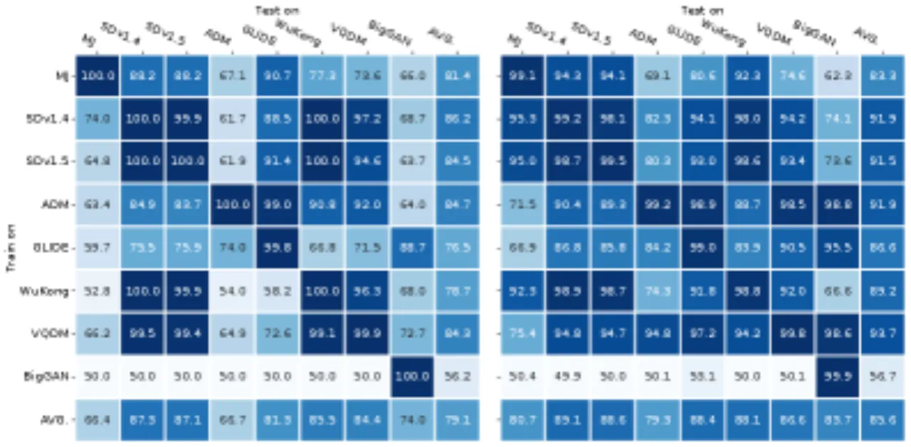
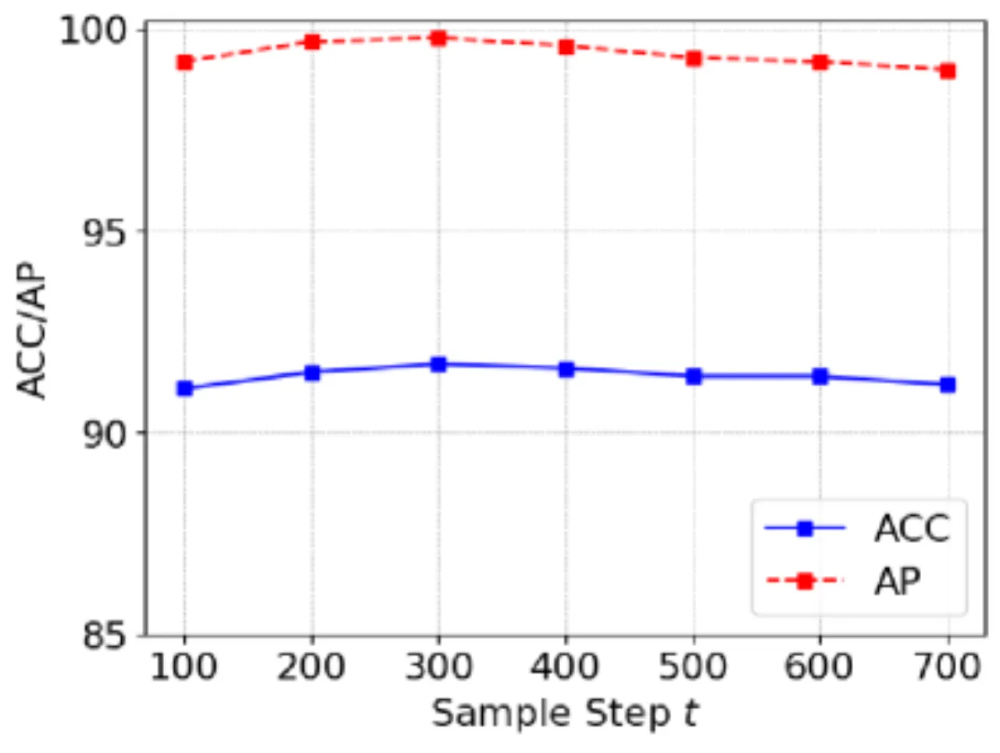

扩散生成图像的检测面临严峻挑战：现有方法依赖重建误差，但该指标将固有数据噪声（aleatoric uncertainty）与模型知识缺口（epistemic uncertainty）混为一谈，导致真假图像分布严重重叠。DEUA 框架首次将扩散模型的认识论不确定性（DEU）作为核心特征，并结合非对称对比损失（Asymmetric Contrastive Loss）解决真实类分布宽泛的"sink class"问题，在 GenImage 和 DRCT-2M 等大规模基准上取得显著性能提升。
扩散模型生成的图像质量极高，现有检测方法普遍依赖重建误差来区分真假，但这一指标受固有数据噪声严重干扰，无法提供可靠的判别信号。
"Aleatoric uncertainty, arising from inherent data noise, creates ambiguity that impedes accurate detection of generated images. In contrast, epistemic uncertainty…represents the model's lack of knowledge about unfamiliar patterns, supports detection."

现有基于重建误差的方法存在两个核心问题：
DEUA 框架由两个核心模块构成：基于 Last-Layer Laplace Approximation（LLLA）的扩散认识论不确定性估计（DEU），以及针对真假类别非对称建模的 Asymmetric Contrastive Loss。

论文通过 Lemma 1 推导出认识论不确定性的估计公式，其核心为对扩散模型最后一层参数在 MAP 点附近进行高斯后验近似：
q(θ) = 𝒩(θ; θ_MAP, Σ)
Monte Carlo 采样 M 组参数、N 组噪声，估计逆扩散过程均值的方差：
U(xt-1|x, t) = Vari(𝔼j(μθᵢ(…)))
实现上采用预训练 VAE 在潜在空间操作，DDIM 采样步数设为 t=200，在鲁棒性测试中 t∈[100, 400] 范围内均保持稳定性能。DEU 特征经多头注意力（Multi-Head Attention, MHA）生成空间注意力图：
zv = MHA(ū, u, v)
针对真假类别边界不对称的特性，论文引入类别独立的 margin 参数：
非对称边界使分类器不再将真实类作为"兜底"，有效压缩真实类特征空间，在 GAN 生成图像（与训练域差异大）上也获得显著的 margin 增益。

实验在 GenImage（14 种生成器）和 DRCT-2M（大规模多样化扩散数据集）两大基准上进行，评估指标为平均准确率（ACC）和平均精度（AP）。基线方法包括 LaRE2、UniFD、DRCT 等。
| 方法 | DR 增强 | 平均 ACC | Δ vs. prev. SOTA |
|---|---|---|---|
| LaRE2 | 无 | 79.1% | — |
| DEUA (ours) | 无 | 85.6% | +6.5% |
| DRCT | 有 | 89.1% | — |
| DEUA (ours) | 有 | 91.5% | +2.4% |
| 方法 | 训练配置 | 平均 ACC | Δ |
|---|---|---|---|
| LaRE2 | 无 DR | 88.0% | — |
| DEUA (ours) | 无 DR | 90.5% | +2.5% |
| DRCT / UniFD | 有 DR + SDv2 | 91.4% | — |
| DEUA (ours) | 有 DR + SDv2 | 98.8% | +7.4% |
| 方法 | ACC | AP | 性能降幅 |
|---|---|---|---|
| LaRE2 | 53.7% | 65.0% | −32.5% |
| DEUA (ours) | 89.5% | 94.5% | −5.8% |

| 配置 | ACC | AP |
|---|---|---|
| Baseline（CLIP only） | 76.1% | 90.7% |
| + DEU | 90.3% | 98.7% |
| + Asymmetric Loss | 81.7% | 93.8% |
| DEU + Asymmetric Loss（DEUA） | 91.5% | 99.7% |
消融结果表明，DEU 单独贡献 +14.2% ACC 提升，非对称损失在 BigGAN 子集上带来 +22.0% ACC 增益，二者协同作用进一步将 AP 推至 99.7%。

"When trained on the BigGAN subset, both methods performed poorly on diffusion-generated images"——GAN 生成图像与扩散生成图像在特征分布上存在本质差异，跨域检测仍是开放难题。非对称损失虽有缓解，但并未根本解决。
当测试图像经扩散模型内绘（inpainting）等 DR 后处理时，DEUA 初期性能下降，需要引入 SDv2 重建数据作为额外训练样本才能恢复竞争力，增加了数据准备成本。
DEU 估计需要 M 次参数采样 × N 次噪声采样的 Monte Carlo 过程，加之 VAE 编码与 DDIM 潜在空间重建，推理开销显著高于直接分类方法。
论文承认"the wide range of features exhibited by the real class"是核心挑战，非对称学习提供了有效缓解，但真实图像多样性带来的 sink class 效应并未被彻底消除。